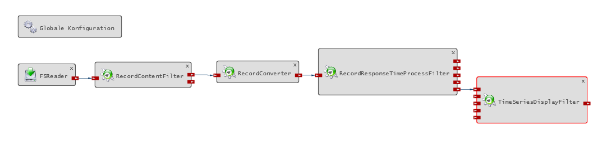
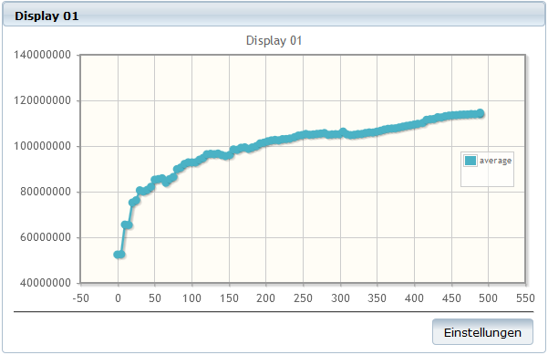

1. Einleitung
Diese Anleitung ist entstanden, um einfaches Performance-Monitoring in kleinen und mittelgroßen Java-Projekten zu ermöglichen, ohne dabei einen unverhältnismäßig großen Aufwand betreiben zu müssen. Um einen genaueren Einblick in Kontext und Motivation dieser Arbeit zu bekommen, sieh Dir bitte die Powerpoint-Präsentation Einfaches Performance-Monitoring von Java-Anwendungen von Thomas Maier an.
Für die Entwicklung dieser Anleitung wurde Kieker-1.9 verwendet. Es ist möglich, dass zukünftige Releases kompatibel sind, dies ist aber nicht garantiert und muss getestet werden. Bei allen Fragen bezüglich Kieker ist immer ein Blick in den Kieker-User-Guide empfehlenswert.
Kieker ist unter der Apache License, Version 2.0 veröffentlicht und kann dementsprechend verwendet werden.
1.1. Was diese Anleitung bietet
Das hier vorgestellte Verfahren zum Monitoring erlaubt eine kontinuierliche Erfassung von Monitoring-Daten wie Responsetime, Methodensignatur, Thread-ID oder Host-Name. Außerdem werden einige Daten — wie etwa User-ID oder Session-ID — erfasst, mit denen sich die gewonnenen Informationen in Bezug zu einem fachlichen Kontext setzen lassen. Die Daten werden von Messsonden erfasst — sogenannte Monitoring-Probes — die normalerweise per Spring-AOP in den Code integriert werden. Alternativ wird die Möglichkeit der manuellen Codeinstrumentierung vorgestellt. Die Monitoring-Probes können gezielt an kritischen Punkten platziert werden, doch haben Performance-Messungen gezeigt, dass auch großzügige bis vollständige Codeinstrumentierungen kaum messbaren Performance-Overhead produzieren. Zudem sind die Monitoring-Probes auch zur Laufzeit an- und abschaltbar. Die produzierten Daten werden als Textdateien im CSV-Format persistiert, die von Tools wie z.B. Excel ausgewertet werden können.
Des Weiteren wird eine Möglichkeit zur Analyse der produzierten Daten unter Verwendung der Kieker-WebGUI aufgezeigt. Hiermit können die Daten beliebig gefiltert und Kennzahlen der Responsetimes — Minimum, Maximum, Median und Durchschnitt — ermittelt, visualisiert und bspw. für externe Tools über JMX bereitgestellt werden. Auch eine kontinuierliche Online-Analyse ist möglich. Da es sich bei der Analyse um ein plugin-basiertes Framework handelt, ist auch eine Erweiterung mit eigenen Plugins für individuelle Lösungen leicht umsetzbar.
1.2. Was diese Anleitung nicht bietet
Diese Anleitung liefert keine Konzept, wie die vom Monitoring erfassten Daten komprimiert oder anderweitig zusammengefasst werden können. D.h. es kann u.U. zu erheblichen Datenmengen kommen. Bei jeder in der Produktion laufenden Anwendung, die das hier vorgestellte Verfahren verwendet, sollte unbedingt darauf geachtet werden, die entstehenden Daten periodisch zu komprimieren und/oder zu löschen.
Zur Bereitstellung des fachlichen Kontextes wird keine universelle Lösung geliefert, da dies in Anbetracht der Unterschiedlichkeit der möglichen Kontexte und Softwareprojekte nicht umzusetzen war. Stattdessen werden Beispielhafte Lösungen vorgestellt, die in vielen Fällen aber mit kleinen Anpassungen übernommen werden können. (Vergleiche Abschnitt 2.1. Punkt 5.)
Das hier beschriebene Verfahren wurde zur Anwendung in kleinen und mittelgroßen Projekten entwickelt. Es beschränkt sich deshalb auf lokale Systeme und bietet „out of the Box“ keine Lösung für ein Monitoring von verteilten Systemen.
1.3. Voraussetzungen
Um die in dieser Anleitung beschriebenen Verfahren einsetzen zu können, müssen die folgenden Voraussetzungen erfüllt sein:
-
Java 1.7 oder höher
-
Kieker 1.9 (wird, bei Verwendung von Maven, transitiv über die Datei
performance-monitoring-1.0.jareingebunden) -
Spring-AOP (ist keine Voraussetzung für die manuelle Instrumentierung)
Die Beispielklassen zur Bereitstellung des fachlichen Kontexts (org.oasp.module.monitoring.ContextProvider und org.oasp.module.monitoring.ManualContextProvider; s. Abschnitt 2.1. Punkt 5) verwenden außerdem:
-
Spring 3.2.1
-
javax.servlet 2.3
1.4. Übersichtsdiagramm
2. Monitoring
Das folgende Kapitel gibt in Abschnitt 2.1. eine Schritt-für-Schritt-Anleitung, wie ein grundlegendes Performance-Monitoring eingerichtet werden kann. In Abschnitt 2.2. wird eine alternative Möglichkeit der Codeinstrumentierung aufgezeigt. Die Abschnitte 2.3. - 2.6. befassen sich mit der Konfiguration sowie zusätzlichen Features des Monitorings.
2.1. Einrichten des Basic Performance-Monitorings
Im Folgenden wird in wenigen Schritten erklärt wie ein grundlegendes Performance-Monitoring erreicht werden kann. Dies ist ein guter Einstieg in das Monitoring mit Kieker und kann später individualisiert und erweitert werden.
-
Füge folgende Zeilen der
pom.xmlDeines Java-Projekts hinzu:<dependency> <groupId>org.oasp.module.monitoring</groupId> <artifactId>performance-monitoring</artifactId> <version>1.0</version> </dependency>Solltest Du kein Maven verwenden, musst Du das jar-File
performance-monitoring-1.0.jaranderweitig dem Build-Path Deines Projekts hinzufügen. -
Die Datei
resources\samples\kieker.monitoring.properties(aus derperformance-monitoring-1.0.jar) muss in dasMETA-INFVerzeichnis Deines Projektes kopiert werden. In dieser Datei ist außerdem die Propertykieker.monitoring.writer.filesystem.AsyncFsWriter.customStoragePathauf den Verzeichnispfad zu setzten, in dem die Monitoring-Logs angelegt werden sollen. -
Um den Programmcode mittels Spring-AOP mit Monitoring-Probes zu instrumentieren, muss die Datei
resources\samples\performance-monitoring.xmlin alle Spring-„Application Contexts“ importiert werden, in denen das Monitoring verwendet werden soll. Im Fall einer Standardanwendung nach Vorgaben der OASP könnte das folgendermaßen aussehen:-
Kopieren der Datei
performance-monitoring.xmlin das Verzeichnis<Dein_Projekt>\src\main\resources\resources\spring\crosscutting. -
Importieren der Datei
performance-monitoring.xmlin beide vorhandenen „Application Contexts“ durch Einfügen folgender Zeile …<import resource="classpath:/resources/spring/crosscutting/performance-monitoring.xml" />… in die Dateien
<Dein_Projekt>\src\main\resources\resources\spring\crosscutting.xmlund<Dein_Projekt>\src\main\resources\resources\spring\gui-flows.xml.TippAlternativ (oder ergänzend) kann der Programmcode auch manuell instrumentiert werden. Siehe dazu Abschnitt 2.2. Manuelle Instrumentierung.
-
-
Um zu bestimmen, welche Teile des Programmcodes grundsätzlich mit Monitoring-Probes versehen werden sollen, muss folgende Zeile aus der Datei
performance-monitoring.xmlangepasst werden:<aop:advisor order="1" advice-ref="monitoringProbe" pointcut="execution(public * com.capgemini.gastronomy.restaurant..*.*(..))" />Das Attribut
pointcutbestimmt mit einem regulären Ausdruck, an welchen Methoden welcher Spring-Beans eine Monitoring-Probe gesetzt wird.WichtigDie Zeile <aop:config proxy-target-class="true">in dieser Datei sorgt dafür, dass CGLib-Proxies anstelle von JDK-Dynamic-Proxies verwendet werden. Dies ist wichtig, da JDK-Dynamic-Proxies nur für Interfaces erstellt werden können.AnmerkungZum genaueren Verständnis der regulären Ausdrücke, siehe Abschnitt 2.5. Pointcut-Expressions. AnmerkungFür eine detailliertere Bestimmung, welche Monitoring-Probes ein- und welche ausgeschaltet werden sollen siehe Abschnitt 2.4. Aktivieren und Deaktivieren von Monitoring-Probes. -
Als letzter Schritt muss nun noch ein Weg gefunden werden, die Daten des fachlichen Kontexts an einer Kontrollinstanz (
org.oasp.module.monitoring.CustomControlFlowRegistry) zu registrieren. Dies muss in jedem Aufruf geschehen, bevor er die erste Monitoring-Probe durchläuft. Nur so ist gewährleistet, dass alle Probes immer auf den fachlichen Kontext des aktuellen Aufrufs zugreifen und die Messdaten später fachlich aggregiert und analysiert werden können. Zusätzlich muss auch am Ende jedes Aufrufs der fachliche Kontext wieder „abgemeldet“ werden, um eine eindeutige Zuordnung der Daten sicherzustellen.Eine Beispiellösung für dieses Problem liefert die Klasse
org.oasp.module.monitoring.ContextProvider. Diese kann über einen zweiten AOP-Advisor in der Dateiperformance-monitoring.xmlin den Code integriert werden:<aop:advisor order="0" advice-ref="contextProvider" pointcut="execution(public * com.capgemini.gastronomy.restaurant.gui..*.*Controller.*(..))" />Auch hier ist der reguläre Ausdruck der Pointcut-Expression anzupassen.
WichtigDas Attribut order=0sorgt dafür, dass an einem Pointcut, an dem sowohl Monitoring-Probe als auchContextProviderausgeführt werden, letzterer zuerst durchlaufen wird. Dennoch musst Du mit der Pointcut-Expression selber dafür sorgen, dass er am Entrypoint jedes Aufrufs, der fachlich gemonitort werden soll, aufgerufen wird.
Das Basic Performance-Monitoring ist nun eingerichtet und produziert während der Ausführung des überwachten Programms Monitoring-Records. Hierzu erstellt Kieker .dat-Dateien und legt diese
in das von Dir in der Property kieker.monitoring.writer.filesystem.AsyncFsWriter.customStoragePath angegebene Verzeichnis.
In der .dat-Datei wird jeder Record im CSV(Comma Separated Values)-Format in einer Zeile dargestellt. Ein Beispiel könnte so aussehen (hier aus Platzgründen auf mehrere Zeilen verteilt)…
$1;1407402241982072647;public void com.capgemini.gastronomy.restaurant.persistence.common.AbstractRestaurantDao.delete(java.lang.Object);
B263CD5C792468124DFB90166E35BD8A;3;1407402241974333720;1407402241982061097;CE08039;5;4;deleteTable@1407402241879;65078309;44;true... und ist folgendermaßen zu lesen:
Der erste Wert ($0 oder $1) gibt die Klasse des Monitoring-Records an. Diese werden in der parallel angelegten Datei kieker.map festgehalten.
Normalerweise steht $1 für den kieker.common.record.misc.KiekerMetadataRecord. Dieser kann in der Kieker-API genauer betrachtet werden.
$0 steht für den org.oasp.module.monitoring.CustomOperationExecutionRecord; wie auch in diesem Beispiel.
Seine Werte können wie folgt interpretiert werden:
| Kürzel | Fachlicher Kontext | Beschreibung |
|---|---|---|
<RT> |
nein |
Record-Type (Klassenname des Records in |
<LT> |
nein |
Logging-Timestamp |
<MS> |
nein |
Method-Signature (Signatur der Methode an der die Monitoring-Probe angebracht ist) |
<SID> |
ja |
Session-ID |
<TrId> |
nein |
Trace-ID (eine Korrelations-ID, über die Records einem Aufruf zugeordnet werden können) |
<Tin> |
nein |
Time-IN (Timestamp vor dem Methodeaufruf) |
<Tout> |
nein |
Time-OUT (Timestamp nach dem Methodenaufruf) |
<HN> |
nein |
Host-Name |
<EOI> |
nein |
Execution Order Index (Index, der bei jeder Messsonde eines Aufrufs um eins erhöht wird) |
<ESS> |
nein |
Execution Stack Size (gibt die Schachtelungstiefe des Aufrufs an) |
<AID> |
ja |
Action-ID (Use-Case-Name oder ID der Use-Case-Instanz) |
<UID> |
ja |
User-ID |
<ThID> |
nein |
Thread-ID |
<Suc> |
nein |
Success (Indikator, ob die Methode fehlerlos beendet wurde) |
|
Achtung
|
Die ersten beiden Daten (<RT> & <LT>) kommen nicht aus der toArray()-Methode des Records. So würde man mit <record>.toArray()[0] das Datum <MS> adressieren. |
2.2. Manuelle Instrumentierung
Ist die Instrumentierung mit Spring-AOP nicht möglich oder unerwünscht, so können alternativ auch manuell Monitoring-Probes im Code integriert werden. Für diesen Zweck wurde die Klasse org.oasp.module.monitoring.ManualOperationExecutionProbe implementiert.
Wie diese Klasse zu verwenden ist, zeigt das folgenden Beispiel:
Diese beispielhafte Methode soll überwacht werden:
1 2 3 4 5 6 | public boolean createTable(long id) throws ValidationException {
this.tableManagement.createTable(id);
this.LOG.debug("Restaurant table with id '" + id + "' will be created.");
return true;
}
|
Hierzu wird zu Beginn der Methode die Methode ManualOperationExecutionProbe.before(String) aufgerufen, um den Monitoring-Vorgang einzuleiten. Als Parameter benötigt sie die Signatur der überwachten Methode.
Der ursprüngliche Code der überwachten Methode sollte von einem try-Block umschlossen werden, damit auch im Falle einer Exception der Monitoring-Vorgang abgeschlossen werden kann.
Dies geschieht mit Hilfe der Methode ManualOperationExecutionProbe.after(MonitoringInfo), die als Parameter das Ergebnis der ManualOperationExecutionProbe.before(String)-Methode benötigt. Zusätzlich muss ein Boolean übergeben werden, der angibt ob die Methode fehlerlos beendet wurde.
Eine manuelle Instrumentierung der Methode könnte also folgendermaßen aussehen:
1 2 3 4 5 6 7 8 9 10 11 12 13 14 15 16 17 18 | String sigName = "public boolean createTable(long)";
try {
sigName = this.getClass().getDeclaredMethod("createTable", long.class).toString();
} catch (NoSuchMethodException | SecurityException e) {
this.LOG.warn("[MONITORING ISSUE] Method signature of class " + this.getClass().toString()
+ " could not be obtained. Using shortened verion: '" + sigName + "'");
}
MonitoringInfo mInfo = ManualOperationExecutionProbe.before(sigName);
boolean success = false;
try {
this.tableManagement.createTable(id);
this.LOG.debug("Restaurant table with id '" + id + "' will be created.");
success = true;
} finally {
ManualOperationExecutionProbe.after(mInfo, success);
}
return true;
}
|
|
Achtung
|
Den String-Parameter für die Methode Andernfalls funktioniert das Ein- und Ausschalten von Monitoring-Probes nicht. Die Zeilen 1 - 7 zeigen eine beispielhafte Möglichkeit, diesen String zusammenzustellen. |
|
Tipp
|
Die manuelle Instrumentierung kann auch ergänzend zur Instrumentierung mit Spring-AOP genutzt werden, um z.B. Klassen, die keine Spring-Beans sind, zu monitoren. |
2.3. Konfiguration des Monitorings
Zur Konfiguration des Monitorings wird die Datei kieker.monitoring.properties verwendet, die per Default im META-INF Verzeichnis des Projekts liegen sollte.
Obwohl sie ausführlich dokumentiert ist, soll hier kurz auf die wichtigsten Properties eingegangen werden:
|
Anmerkung
|
Bei Datei resources\samples\kieker.monitoring.properties handelt es sich um eine gekürzte Form des von Kieker mitgelieferten Originals. Solltest Du Dich dazu entscheiden, die Analyse selber in die Hand zu nehmen und
den kieker.monitoring.writer.filesystem.AsyncFsWriter durch einen anderen zu ersetzen, empfehle ich das Original heranzuziehen, das in jedem Release von Kieker enthalten ist. |
2.4. Aktivieren und Deaktivieren von Monitoring-Probes
Um Monitoring-Probes zur Laufzeit zu aktivieren oder zu deaktivieren, kann eine Pattern-List in der Datei kieker.monitoring.adaptiveMonitoring.conf verwendet werden.
Hierzu müssen folgende Properties in der Datei kieker.monitoring.properties gesetzt werden:
kieker.monitoring.adaptiveMonitoring.enabled=true
...
kieker.monitoring.adaptiveMonitoring.configFile=<Pfad zur Datei>
...
kieker.monitoring.adaptiveMonitoring.readInterval=30Die erste Property schaltet das adaptive Monitoring ein. In der Zweiten ist der Pfad zur Datei kieker.monitoring.adaptiveMonitoring.conf anzugeben. Mit der Dritten kann das Poll-Intervall in Sekunden festgelegt werden.
Die Syntax der Pattern-List ist in der Datei kieker.monitoring.adaptiveMonitoring.conf mit einigen Beispielen erklärt.
Alternativ können Monitoring-Probes auch über den Zugriff auf den Monitoring-Controller via JMX ein- und ausgeschaltet werden.
2.5. Pointcut-Expressions
In der Datei performance-monitoring.xml wird mittels Pointcut-Expressions bestimmt, welche Methoden welcher Spring-Beans durch das Monitoring überwacht werden.
Diese Pointcut-Expressions verwenden die AspectJ-Pointcut-Expression-Language, die im AspectJ Programmers Guide näher beschrieben ist.
2.6. Zugriff auf den Monitoring-Controller via JMX
Auf den Monitoring-Controller von Kieker kann als MBean über JMX zugegriffen werden. Auf diese Weise kann beispielsweise zur Laufzeit das gesamte Monitoring oder einzelne Probes ein- und ausgeschaltet werden.
Hierzu müssen die folgenden Properties in der Datei kieker.monitoring.properties gesetzt werden:
kieker.monitoring.jmx=true
...
kieker.monitoring.jmx.MonitoringController=trueNun kann z.B. JConsole verwendet werden, um auf den Monitoring-Controller zuzugreifen. Dabei ist zu beachten, dass Kieker zum Classpath von JConsole hinzugefügt wird. Eine detailliertere Erläuterung findest Du im Kieker-User-Guide.
2.7. Individuelle Anpassung des Monitorings
Sollten Dir die vom Monitoring festgehaltenen Daten nicht umfangreich genug sein, so kannst Du es um zusätzliche Daten erweitern.
Hierzu sollten zunächst die Klassen org.oasp.module.monitoring.CustomOperationExecutionRecord und org.oasp.module.monitoring.CustomOperationExecutionMethodInvocationInterceptor
(bzw. org.oasp.module.monitoring.ManualOperationExecutionProbe im Falle von manueller Instrumentierung) betrachtet und erweitert werden.
Sollte es sich bei den neuen Daten um fachlichen Kontext handeln, so muss außerdem die Klasse org.oasp.module.monitoring.CustomControlFlowRegistry erweitert werden
und auch bei der Registrierung des fachlichen Kontexts an der Instanz dieser Klasse müssen die neuen Daten berücksichtigt werden (s. Abschn. 2.1. Punkt 5).
|
Anmerkung
|
Einige der genannten Klassen lassen sich nicht oder nur sehr umständlich im Sinne von "extend" erweitern. In diesen Fällen muss leider auf das Prinzip
des Kopierens und Ergänzens zurückgegriffen werden. |
3. Analyse
Die vom Monitoring produzierten Monitoring-Records im CSV Format können mit Tools wie z.B. Excel ausgewertet werden. Diese Anleitung beschreibt in Abschnitt 3.1. - 3.3. zusätzlich, wie eine grundlegende Analyse mit Hilfe des plugin-basierten „Pipe-and-Filter Frameworks“ und der WebGUI von Kieker durchgeführt werden kann. Hierzu werden eine Reihe von fertigen Plugins bereitgestellt, die in Abschnitt 3.4. dokumentiert sind. In Abschnitt 3.5. wird außerdem beschrieben, wie das Framework um selbstgeschriebene Plugins schnell erweitert werden kann, um individuelle Lösungen zu ermöglichen. Abschnitt 3.6. erläutert wie eine Analyse ohne die WebGUI durchgeführt werden kann.
3.1. Das Pipe-and-Filter Framework
Das Package Kieker.Analysis stellt ein plugin-basiertes Framework zur Verfügung, das eine individuell konfigurier- und erweiterbare Analyse ermöglicht.
Hierbei speist immer ein Reader-Plugin — das Monitoring-Records in irgendeiner Form einliest — Records in ein Netzwerk aus mehreren Filter-Plugins, die die Records dann
weiterverarbeiten, aggregieren, analysieren, visualisieren oder auch für externe Schnittstellen bereitstellen. Allen Filter-Plugins ist gemein, dass sie immer über mindestens einen Input-Port
verfügen, über den sie Records oder andere Objekte, die bei der Weiterverarbeitung der Records entstehen, empfangen können. Die meisten verfügen außerdem über mindestens einen Output-Port,
der zur Weiterleitung von Daten an andere Plugins dient.
Für eine detailliertere Beschreibung ziehe bitte den Kieker-User-Guide zu Rate.
3.2. Die Kieker-WebGUI
Das Erstellen, Konfigurieren und Ausführen der Plugin-Netzwerke kann zwar unter Verwendung einer Java-API erfolgen, doch ist dies mühsam und fehleranfällig. Deshalb soll in diesem Guide die Kieker-WebGUI zur Analyse verwendet werden, die zu eben diesem Zweck von Kieker entwickelt wird. Zum derzeitigen Stand (Kieker-1.9) befindet sich die WebGUI noch in der Beta-Phase, doch sind die wichtigen Funktionalitäten schon ausreichend implementiert, um brauchbare Ergebnisse zu erzielen und mit einer ausführlichen Weiterentwicklung ist zu rechnen.
Im Kieker Blog kann ein ausführlicherer Überblick über die WebGUI gewonnen werden.
3.3. Erstellung eines beispielhaften Plugin-Netzwerks
Im folgenden wird unter Verwendung der Kieker-WebGUI ein Beispielhaftes Plugin-Netzwerk erstellt, um die Verwendung der WebGUI zu verdeutlichen.
-
Entpacke das
kieker-webgui-1.9_binaries.zip-File in ein beliebiges Verzeichnis. -
Führe das Skript
kieker-webgui-1.9_binaries\bin\Kieker.WebGUI.bataus, um die WebGUI zu starten. (Dies kann einige Sekunden dauern.) -
Gib folgende URL http://localhost:8080/Kieker.WebGUI/login in Deinen Webbrowser ein.
-
Logge Dich mit dem Benutzernamen „admin“ und dem Passwort „kieker“ ein.
-
Klicke oben links auf „Datei“ → „Neues Projekt“, um ein Projekt mit beliebigem Namen zu erstellen; im Folgenden als
<Dein_Projekt>bezeichnet.
Es wurde nun ein Verzeichniskieker-webgui-1.9_binaries\bin\data\<Dein_Projekt>erstellt. -
Klicke nun unter http://localhost:8080/Kieker.WebGUI/pages/ auf <Dein_Projekt> → „Analyse Editor“. Nun siehst Du die Seite, auf der Plugin-Netzwerke zusammengestellt werden können.
-
Importiere jetzt die Datei
performance-monitoring-1.0.jarin Dein Projekt. Hierzu klickst Du oben links auf „Datei“ → „Bibliotheken Verwalten“ und im daraufhin erscheinenden Popup auf „Durchsuchen“. Wähle jetzt die eben genannte Datei aus. Damit ist gewährleistet, dass Dein Projekt über die eigens für diese Anleitung geschriebenen Klassen verfügt.TippAlternativ können .jar-Datein, die Klassen zur Analyse enthalten, auch in das Verzeichnis kieker-webgui-1.9_binaries\bin\data\<Dein_Projekt>\libkopiert werden. -
Durch klicken auf Plugins im Bereich „Verfügbare Plugins“ auf der Linken Seite, fügst Du sie Deinem Plugin-Netzwerk hinzu. Klicke zunächst auf
FSReader. Dieser erscheint nun als graues Rechteck im Haupt-Widget und lässt sich durch Ziehen mit der Maus positionieren.AnmerkungÜber das Kästchen mit der Aufschrift „Globale Konfiguration“ lässt sich die Zeiteinheit der Monitoring-Records angeben; in fast allen Fällen kann es beim Default NANOSECONDSbelassen werden. -
Klicke auf den
FSReaderim Haupt-Widget, um im unteren Bereich seine Properties einzublenden. Hier kann jedes Plugin konfiguriert werden. Gib für die PropertyinputDirsdesFSReaderden Pfad zu dem Verzeichnis an, in dem sich die zu analysierenden Monitoring-Records befinden.WichtigEs muss das Verzeichnis sein, in dem sich die .mapund.datDateien befinden. Nicht etwa ein Parent-Verzeichnis! -
Füge nun einen
RecordContentFilterDeinem Plugin-Netzwerk hinzu. Dieser filtertOperationExecutionRecordsanhand ihres Inhalts; z.B. der Methodensignatur. -
Verbinde durch Anklicken den Output-Port des
FSReadermit dem Input-Port desRecordContentFilter. -
Setze nun die Properties des
RecordContentFilterwie folgt:-
type:
STRING -
compare:
GE(dies entspricht für Strings einem contains) -
arrayIndex:
0(am Index 0 befindet sich in der Array-Darstellung des Records normalerweise die Methodensignatur) -
filterKey: <Ein Teil der Methodensignatur, die alle Records enthalten sollen, die Du herausfiltern möchtest. Z.B.
com.capgemini.gastronomy.restaurant.>TippDie Symbolleiste des Analyse Editors verfügt über einen Button zur automatischen Anordnung der Plugins. („Layoutet den Graphen“)
-
-
Füge als nächstes einen
RecordConverterhinzu und verbinde seinen Input-Port mit dem Output-PortrecordsOutTruedesRecordContentFilter. Dieser wandelt die Records in Objekte der Klassekieker.tools.opad.record.NamedDoubleRecordum — eine abstraktere Klasse, die nur noch Timestamp und Responsetime des Records enthält. Hierzu müssen keine Properties gesetzt werden. -
Als nächstes muss dem Netzwerk ein
RecordResponseTimeProcessFilterhinzugefügt werden. Verbinde seinen Input-Port mit dem Output-Port desRecordConverterund belasse seine Properties wie voreingestellt. DerRecordResponseTimeProcessFilteraggregiert nun die ankommendenNamedDoubleRecordsund berechnet aus diesen Anzahl, Minimum, Maximum, Median und Durchschnitt der Antwortzeiten. Die Ergebnisse sendet er alle fünf Sekunde (Property „deliverPeriodInMS“ =5000) über die fünf Output-Ports weiter. -
Die vom
RecordResponseTimeProcessFilterberechneten Werte lassen sich mit einemTimeSeriesDisplayFilterin der WebGUI visualisieren. Füge einen solchen Deinem Plugin-Netzwerk hinzu und verbinde den Output-PortoutputAvgdesRecordResponseTimeProcessFilter(dieser überträgt den Durchschnittswert) mit einem der Input-Ports desTimeSeriesDisplayFilter. Setze nun die Property des entsprechenden Input-Ports desTimeSeriesDisplayFilterauf „average“, um zu benennen was diese Serie darstellt. D.h. wenn Du die Verbindungslinie z.B. zum Input-PortinputSeriesAgezogen hast, solltest Du die für die PropertyseriesA„average“ eingeben. -
Dein erstes Plugin-Netzwerk ist nun fertig und betriebsbereit. Klicke auf das Diskettensymbol oben links, um Dein Projekt zu speichern. Die folgende Grafik zeigt, wie das ganze in etwa aussehen sollte:
 -
Um eine Visualisierung der
TimeSeriesDisplayFilterzu ermöglichen, muss diese noch im „Cockpit Editor“ eingerichtet werden (Button oben rechts). -
Der Cockpit Editor dient der Konfiguration der Visualisierung, wie sie später im Cockpit-Bereich zu sehen ist. In unserem Fall verfügt nur der
TimeSeriesDisplayFilterüber eine Visualisierung. Klicke zunächst oben links auf „Datei“ → „Neue Ansicht“, um eine neue Ansicht zu erstellen. Klicke dann links auf den Namen der gerade erstellten Ansicht und auf „Ansicht Selektieren“, um sie auszuwählen. -
Füge nun das „XYPlot Display“ des
TimeSeriesDisplayFilterder Ansicht hinzu, indem Du rechts aufTimeSeriesDisplayFilter→ „XYPlot Display“ klickst. Optional kannst Du dem Display noch einen Namen geben, durch setzen der Property „Name“ im unteren Bereich. -
Speichere Dein Projekt erneut durch Anklicken des Diskettensymbols.
-
Wechsle zur Analyse-Ansicht mit dem Button „Analyse“ oben rechts.
-
Klicke unten auf „Analyse Instanziieren“ gefolgt von „Analyse Starten“, um die Analyse zu starten.
-
Wechsle nun in die „Cockpit“-Ansicht und wähle die von Dir erstellte Ansicht aus, um das Ergebnis Deiner Analyse zu betrachten. Je nach verwendeten Monitoring-Daten sollte Deine Visualisierung der folgenden Grafik mehr oder weniger ähneln:
AnmerkungDu solltest die Analyse in der Analyse-Ansicht immer zurücksetzen, bevor Du eine neue konfigurierst oder startest.
3.4. Übersicht der bereitgestellten Plugin-Klassen
Im folgenden findest Du eine Übersicht der wichtigsten Filter-Plugins, die für die Analyse mit dem „Pipe-and-Filter Framework“ empfohlen werden. Mit Hilfe dieser Plugins ist eine grundlegende
Analyse bereits möglich. So können Records, die von der Klasse kieker.common.record.controlflow.OperationExecutionRecord erben, mit dem RecordContentFilter nach jeglichem Inhalt
gefiltert werden. Mit dem RecordResponseTimeProcessFilter lassen sich die gefilterten Daten dann aggregieren und zu Kennzahlen zusammenfassen. Diese Kennzahlen können dann mit
dem TimeSeriesDisplayFilter in der WebGUI visualisiert und/oder mit dem JMXDataProviderFilter über JMX bereitgestellt werden, um mit externen Monitoring-Tools darauf zuzugreifen.
Kieker stellt noch eine Reihe weiterer Plugins — die in der WebGUI auch aufgelistet sind — zur Verfügung. Diese können in der Kieker-API nachgeschlagen werden, sind aber zum derzeitigen Stand (Kieker-1.9) nur spärlich dokumentiert.
|
Tipp
|
Die folgenden Filter-Plugins sind eigens für diese Anleitung geschrieben worden und sind zusätzlich ausführlich im JavaDoc der Datei performance-monitoring-1.0.jar dokumentiert. |
3.5. Individuelle Lösungen
Wenn die in Abschnitt 3.4. aufgeführten Plugins Deinen Ansprüchen nicht genügen, so muss eine individuelle Lösung gefunden werden. Hierzu kann zunächst ein Blick auf die von Kieker bereitgestellten Plugin-Klassen geworfen werden. Diese sind in der Kieker-API einzusehen, doch ist die Dokumentation beim derzeitigen Stand (Kieker-1.9) noch nicht vollständig und u.U. kann eine selbst implementierte Klasse schneller zu einer guten Lösung führen.
Solltest Du Dich dafür entscheiden eigene Plugins zu schreiben, so kannst Du Dich an den Klassen im Package org.oasp.module.monitoring.analysis orientierten, die ausführlich im Javadoc dokumentiert
sind. Außerdem ist bei der Implementierung von Plugins folgendes zu beachten:
-
alle Plugin-Klassen müssen mit der Annotation
@Plugingekennzeichnet sein, in der Output-Ports und Properties definiert werden -
alle Reader-Plugins müssen von der Klasse
kieker.analysis.plugin.reader.AbstractReaderPluginabgeleitet sein -
alle Filter-Plugins müssen von der Klasse
kieker.analysis.plugin.filter.AbstractFilterPluginabgeleitet sein -
alle Filter-Plugins müssen mindestens eine Input-Methode haben, die mit der Annotation
@InputPortgekennzeichnet ist -
alle Properties eines Plugins sollten immer über ein Objekt der Klasse
kieker.common.configuration.Configurationgesetzt werden -
alle Properties eines Plugins sollten immer mit der Methode
getCurrentConfiguration()in einem Objekt der Klassekieker.common.configuration.Configurationzurückgegeben werden
Eine ausführliche Anleitung zum Schreiben von Reader- und Filter-Plugins findet sich im Kapitel „4.2 Developing Analysis Plugins and Repositories“ im Kieker-User-Guide.
3.6. Stand-Alone-Analyse mit dem „kax-run“-Skript
Die in der Kieker-WebGUI erstellten Plugin-Netzwerke werden in .kax-Dateien gespeichert (abgelegt im Verzeichnis kieker-webgui-1.9_binaries\bin\data\<Dein_Projekt>). Es ist möglich
diese ohne die WebGUI zu starten. Dies macht natürlich nur Sinn, wenn die Ausgabe nicht auf Visualisierung innerhalb der WebGUI basiert. So z.B.
beim org.oasp.module.monitoring.analysis.JMXDataProviderFilter. Hierzu wird allerdings ein Skript aus dem Kieker-Release benötigt.
Einmal heruntergeladen und entpackt, findest du es unter kieker-1.9\bin\kax-run.bat. Nun kannst Du mit folgendem Befehl dein .kax-File starten:
|
Wichtig
|
Die Datei performance-monitoring-1.0.jar sowie alle .jar-Dateien, die etwaige verwendete Klassen enthalten, müssen dem Verzeichnis kieker-1.9\lib hinzugefügt werden. |
4. Nützliche Links und Literaturverweise
-
Kieker User Guide — Kieker Project (Apr. 2014). Kieker 1.9 User Guide. Software Engineering Group, Kiel University, Kiel, Germany.
-
Kieker Blog — gibt einen Überblick über die Kieker-WebGUI.
-
AspectJ-Programmers-Guide — erklärt die Pointcut-Expression-Language, derer Spring-AOP sich bedient.
-
Stefan Eberlein. „Erhebung und Analyse von Kennzahlen aus dem fachlichen Performance-Monitoring“. Dimplomarbeit. Friedrich-Alexander-Universität Erlangen-Nürnberg, 2011 — Bietet einen umfangreichen Überblick über das Thema.
-
Johannes Mensing „Methodische Vorgaben für Performance-Monitoring im Kontext betrieblicher Java-Anwendungen“. Bachelorarbeit. Hochschule RheinMain Wiesbaden, 2014 — Im Rahmen der Bachelorarbeit entstand diese Anleitung.